Taming
Weaken a monster, stand next to it and choose Tame (costs a Monster Treat). Your level decides which beasts you can tame and how often it works.
Level guide
| Level | Unlock | |
|---|---|---|
| 1 | 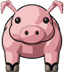 | Tame a Pig (Earth; easier from level 4) |
| 1 | Tame a Slime (Water; easier from level 9) | |
| 1 | 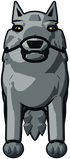 | Tame a Wolf (Earth; easier from level 17) |
| 1 | Your first tamed beast follows you and fights at your side | |
| 2 | 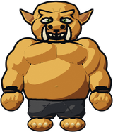 | Tame an Orc (Earth; easier from level 22) |
| 3 | 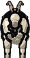 | Tame a Goat (Earth; easier from level 23) |
| 3 | Tame a Goose (Wind; easier from level 23) | |
| 5 | 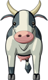 | Tame a Cow (Earth; easier from level 25) |
| 5 | Tame an Imp (Fire; easier from level 25) | |
| 9 | 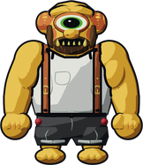 | Tame a Cyclops (Earth; easier from level 29) |
| 13 | 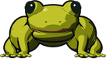 | Tame a Poison Frog (Water; easier from level 33) |
| 15 | 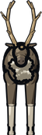 | Tame a Reindeer (Earth; easier from level 35) |
| 16 | 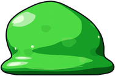 | Tame a Mega Slime (Water; easier from level 36) |
| 16 | 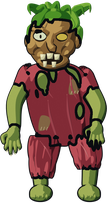 | Tame a Zombie (Shadow; easier from level 36) |
| 17 | Tame a Wildcat (Earth; easier from level 37) | |
| 18 | Tame a Snow Owl (Wind; easier from level 38) | |
| 19 | 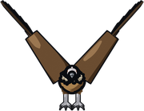 | Tame a Vulture (Wind; easier from level 39) |
| 20 | Tame a Squid (Water; easier from level 40) | |
| 25 | Tame a Gazer (Wind; easier from level 45) | |
| 25 | 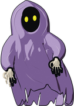 | Tame a Ghost (Wind; easier from level 45) |
| 25 | 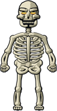 | Tame a Skeleton (Shadow; easier from level 45) |
| 25 | 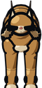 | Tame an Iberian Lynx (Earth; easier from level 45) |
| 26 | 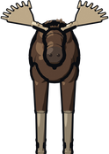 | Tame an Elk (Earth; easier from level 46) |
| 27 | 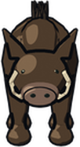 | Tame a Wild Boar (Earth; easier from level 47) |
| 28 | 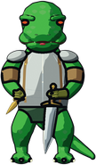 | Tame a Lizard Warrior (Earth; easier from level 48) |
| 29 | Tame a Holy Shield (Light; easier from level 49) | |
| 29 | Tame a Sea Eagle (Wind; easier from level 49) | |
| 29 | 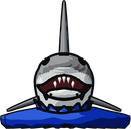 | Tame a Shark (Water; easier from level 49) |
| 36 | 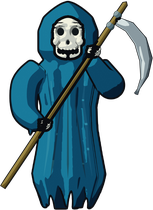 | Tame a Death (Shadow; easier from level 56) |
| 36 | 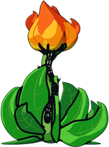 | Tame a Snared Loah (Earth; easier from level 56) |
| 36 | 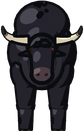 | Tame a Wild Bull (Earth; easier from level 56) |
| 38 | 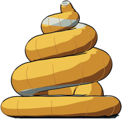 | Tame a Mutant Worm (Earth; easier from level 58) |
| 39 | 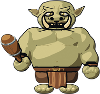 | Tame an Ogre (Earth; easier from level 59) |
| 41 | 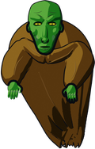 | Tame a Ghoul (Shadow; easier from level 61) |
| 43 | 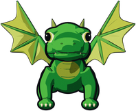 | Tame a Dragon Hatchling (Fire; easier from level 63) |
| 43 | 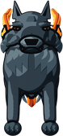 | Tame a Hellhound (Fire; easier from level 63) |
| 43 | 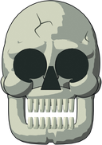 | Tame a Stone Skull (Earth; easier from level 63) |
| 44 | Tame a Demon (Shadow; easier from level 64) | |
| 45 | Tame a Yeti (Water; easier from level 65) | |
| 47 | 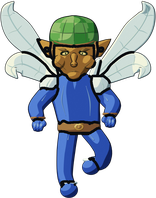 | Tame a Dark Fairy (Wind; easier from level 67) |
| 49 | 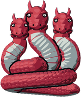 | Tame a Dragon Snake (Shadow; easier from level 69) |
| 49 | Tame a Gryphon (Wind; easier from level 69) | |
| 49 | 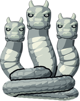 | Tame a Snow Serpent (Water; easier from level 69) |
| 51 | Tame a Snow Demon (Water; easier from level 71) | |
| 58 | 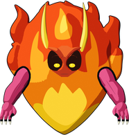 | Tame a Fire Demon (Fire; easier from level 78) |
| 66 | Tame a Dragon (Fire; easier from level 86) | |
| 79 | 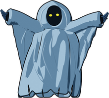 | Tame an Overlord (Shadow; easier from level 99) |